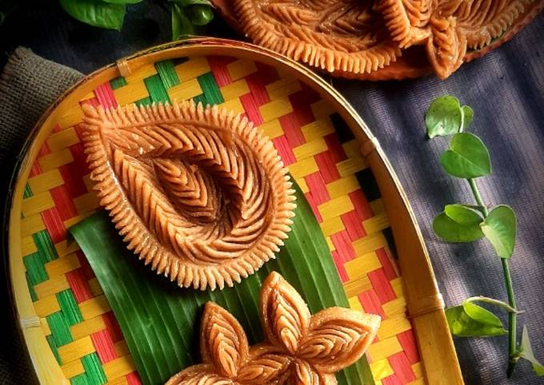

NAKSHI PITHA

Ingredients
- Water 2.5 cups
- Salt to taste
- Rice flour 2 cups
- Oil as required
- Toothpick or similar pointy object for making designs
Directions
- Bring water to a boil in a medium-sized saucepan. Add salt to taste, stir and mix.
- Once the water starts to boil, add rice flour. Stir and cover with lid.
- Turn off heat and let it sit under the closed lid for 10 mins.
- Remove lid and mix everything together, allow it to cool down to room temperature before kneading.
- Knead well for couple minutes to form a smooth and soft dough. Divide the dough into smaller equal portions.
- Brush oil on the rolling surface and on top of dough, flatten and roll out to a thick flat circle.
- Using a toothpick or a similar pointy object, cut and design into pitha shape. Remember to practice enough times to perfect the designs!
- Deep fry the pithas in medium hot oil until they are golden brown. Remove from oil and drain excess oil on paper towel.
- Make syrup in a separate saucepan, add 1 cup sugar and 1/2 cup water. Stir and cook until the sugar dissolves completely. Add 1 tsp of honey to avoid crystallization.
- Add the nokshi pithas and coat evenly on both sides.
- Remove and serve in a plate.